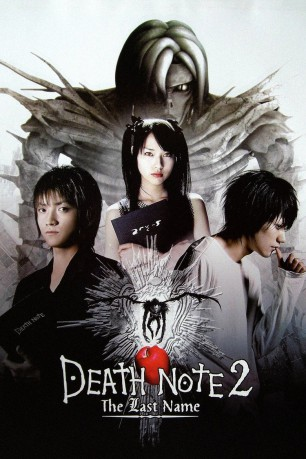

#3232 Death Note 2 - The Last Name
 gesehen am 06.03.2016
gesehen am 06.03.2016
 
 IMDB-Wertung: 7.3 / 10
IMDB-Wertung: 7.3 / 10  Metascore: 0
Metascore: 0 
Light (Tatsuya Fujiwara) hat es geschafft. Indem er seine eigene Freundingeopfert hat, ist er in die Kira-Sonderkommission und damit ganz in dieNaehe von Superagent L (Ken ichi Matsuyama) gelangt. Doch dieser hat seinenVerdacht gegen Light noch lange nicht begraben, glaubt trotz allem, dassin Wahrheit doch der junge Polizeischaeler hinter der mysterioesen Mordseriesteckt. Dass mittlerweile auch die Popprinzessin Misa Amane (Erika Toda)in Besitz eines Death Note gekommen ist und nun ebenso lustig vor sichhinmeuchelt, erschwert die Ermittlungen zusehens. Vor allem, weil sich derzweite Kira, wie der Killer mittlerweile Ueberall genannt wird, ueber dieMedien direkt an die Oeffenlichkeit wendet und dadurch einen richtiggehendenKult um sich herum errichtet.
Jahr: 2006
Dauer: 134 Minuten
FSK: 16
Land: Japan Studio: I-On New MediaTonspuren: DTS - ,
Untertitel: Deutsch,
Auflösung: 1080p (1920x1080) Größe: 11366 MB
Genre: Thriller, Drama, Abenteuer, Fantasy, Krimi, Mystery
Regisseur: Shûsuke Kaneko
Drehbuch: Tsugumi Ôba, Takeshi Obata, Tetsuya Oishi
Soundtrack: Kenji Kawai
Darsteller:
 Tatsuya Fujiwara als Light Yagami
Tatsuya Fujiwara als Light Yagami Shidô Nakamura als Ryuuk
Shidô Nakamura als Ryuuk Ken'ichi Matsuyama als L
Ken'ichi Matsuyama als L- Takeshi Kaga als Soichiro Yagami
 Erika Toda als Misa Amane
Erika Toda als Misa Amane- Shigeki Hosokawa als FBI Agent Raye Iwamatsu
- Shunji Fujimura als Watari
- Shin Shimizu als Kenzo Mogi
- Sota Aoyama als Tota Matsuda
- Magy als TV Director
- Pîtâ als Rem
- Michiko Godai als Sachiko Yagami
- Hanako als
- Itsuji Itao als Hikima
- Yû Kaneko als
- Nana Katase als Kiyomi Takada
- Miyuki Komatsu als Detective Sanami
- Ai Maeda als Ayako Yoshino
 Hikari Mitsushima als Sayu Yagami
Hikari Mitsushima als Sayu Yagami- Ikuji Nakamura als Ukita
- Jun Okazaki als Festival Goer
- Tatsuhito Okuda als Aizawa
- Masahiko Tsugawa als Police Chief Saeki
- Sakura Uehara als Saeko Nishiyama
- Hiroaki Hata als Festival goer , uncredited
Datei: X:\HD-Eastern-Collections\Death Note\Death Note 2 - The Last Name (2006, FSK16, 1920x1080).mkv seit 19.02.2016
Festplatte: HD Eastern+Western
 Es gibt insgesamt 7 Filme in der Gruppe 'HD-Eastern-Collections\Death Note'
Es gibt insgesamt 7 Filme in der Gruppe 'HD-Eastern-Collections\Death Note'